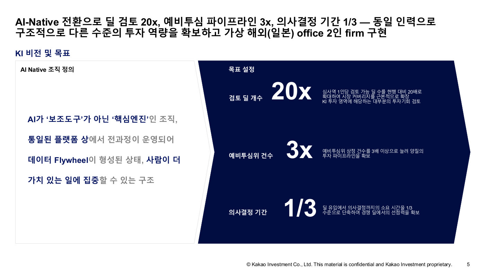

벤처캐피탈은 유망한 스타트업을 골라 투자하고, 그 회사가 커지면 수익을 얻는 회사다. 카카오인베스트먼트는 심사역(투자할 회사를 검토하는 전문가) 9명의 개인 실력에 의존해 왔는데, 투자의 절반 이상이 해외 건이라 일주일 안에 결정하지 못하면 좋은 기회를 다른 투자자에게 빼앗기곤 했다. 해외에서는 이미 10만 건이 넘는 투자 데이터를 학습한 AI로 2주, 빠르면 24시간 만에 투자를 결정하는 회사가 나왔고, AI 심사역이 초기 심사의 90%를 맡아 3일 안에 결과를 통보하는 국내 회사도 등장했다. 그런데 정작 회사 안을 들여다보니 자료가 엑셀, 이메일, 사내 게시판, PPT에 뿔뿔이 흩어져 있어서(데이터 사일로) AI가 배우거나 가져다 쓸 수가 없는 구조였다.
발표자는 투자 발굴부터 회수까지 회사의 모든 업무를 표로 쪼개서 분석한 뒤, 효과가 크고 당장 만들 수 있는 것부터 9개의 AI 모듈(포트폴리오 대시보드, 투자 기회 탐색기, 계약서 검토 등)을 만들었고 절반 이상이 이미 시제품 완성 단계다. 원칙은 "사람이 AI에 맞춘다"였다. 회의에서 누가 말했는지 AI가 구분하는 기술(화자 분리)이 15명 회의에서는 아직 부족하자 기술을 기다리는 대신 핵심 인물 서너 명만 구분하도록 회의 방식 자체를 바꿨고, 찬성과 반대만 적던 투자 투표도 항목별 점수를 매기는 방식으로 바꿔 AI가 배울 수 있는 데이터를 남겼다. 특히 재미있는 것은 AI 레드팀(일부러 반대 의견을 내는 역할)이다. 사람이 반대 역할을 맡으면 다음에 자기도 심사받을 처지라 순한 의견만 냈는데, AI에게 시키자 봐주지 않는 "진짜 매운맛" 반대 의견이 나와 심사가 훨씬 깐깐해졌다.
목표는 심사역 1인당 검토하는 투자 후보 20배, 투자심의위원회에 올라가는 안건 3배, 의사결정에 걸리는 기간 3분의 1이다. 1년 안에 AI가 초기 후보의 70% 이상을 걸러내고 평균 결정 시간을 1주일 안으로 줄이는 것이 계획이다. 재무팀이 분기마다 일주일씩 걸려 만들던 보고 자료는 대시보드가 완성되면 실시간으로 나온다. 나아가 8월에는 일본 투자를 전담하는 가상 법인을 단 2명이 AI와 함께 운영하는 실험까지 준비하고 있는데, 발표자는 AI 덕분에 앞으로 한두 명이 운영하는 특별한 투자회사가 세계 곳곳에서 나올 것이라고 내다봤다.